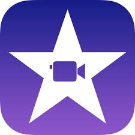
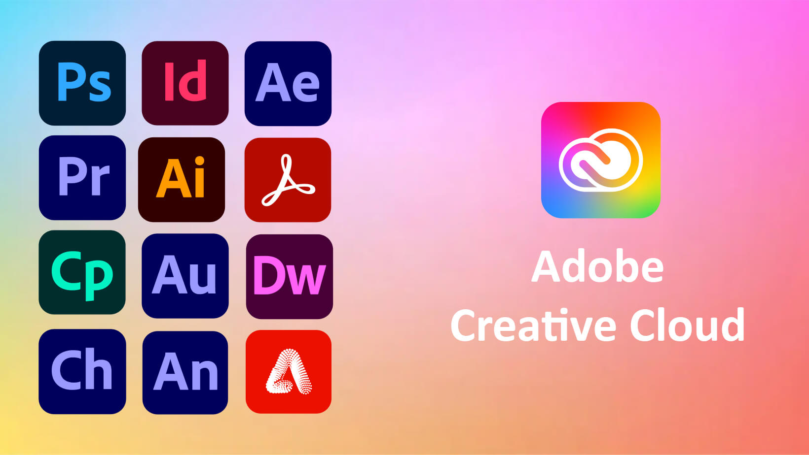

Technologies that have figured prominently in my attitudes about code and digital technology.
My name is Ava and I am from Mars, Pa. I am currently attending the University of Pittsburgh and in my first year. I am a chemistry major and love all things science, despite not being the best at it! When I was in middle school, I joined our school's news and media club. We live streamed the news every morning and I was always working on individual video projects in my spare time at the studio. I learned how to live stream, and make sure it was good quality and displayed what was needed. I learned how to use Adobe Premiere Pro to make videos and animations and Adobe Express to live stream our newscasts each day. It gave me a better understanding of how to use code, import images and animations, and how to produce high quality videos in a short amount of time.
Technologies that have figured prominently in my attitudes about code and digital technology.
Code is very prominent in our world. Code can filter the type of content and information we consume which can change how we perceive reality and the world around us, format opinions and ideas, and what we prioritize. Apps and websites can also influence our daily habits like which routes we take to get places and what we eat. Code is also integrated into many workplaces and school settings to complete tasks and other projects. The Dear Data analysis showed me that I use my phone and computer for such a wide variety of things. I use it to socialize, catch up on world news, communicate, get entertainment, and complete school work. The data was pretty accurate but had some flaws. First, it displays that I spent 14 hours online on a single day. Which is technically true, however I almost always use my phone when I am completing homework and assignments whether it is to review information or to have a show on in the background. So if I spent 5 hours on homework, the data represents about 9 hours because I was using both my phone and computer at the same time. I like how it tracks every app you use, but I think 1 major flaw is that it does not track time spent listening to music or podcasts, which I do pretty much everyday.

Code and digital technology has changed how we think and learn by introducing a new literacy. Today knowing things like how to research, evaluating data analysis, etc. is extremely important. Also, students have access to much more information, tools, and resources to help them learn and get the most out of their education. Technology has also made learning a more independent task, students need to have critical thinking, adaptability, and problem-solving skills to navigate digital technology. Code can shape what we see and know, algorithms filter all of the content we see and without understanding that we can gain a false sense of reality and not understand the full truth of what we consume. We also need to recognize that code is written by people, this means it can contain biased information, opinions, and assumptions about our world.
Always locked in.
I personally see myself using code and digital technology in the future in veterinary medicine. I would like to learn how to use AI in a more educational and beneficial way to further my understanding and knowledge about certain topics. I would also like to become more comfortable using code and designing other aspects about it.
Future AI use in a veterninary setting.